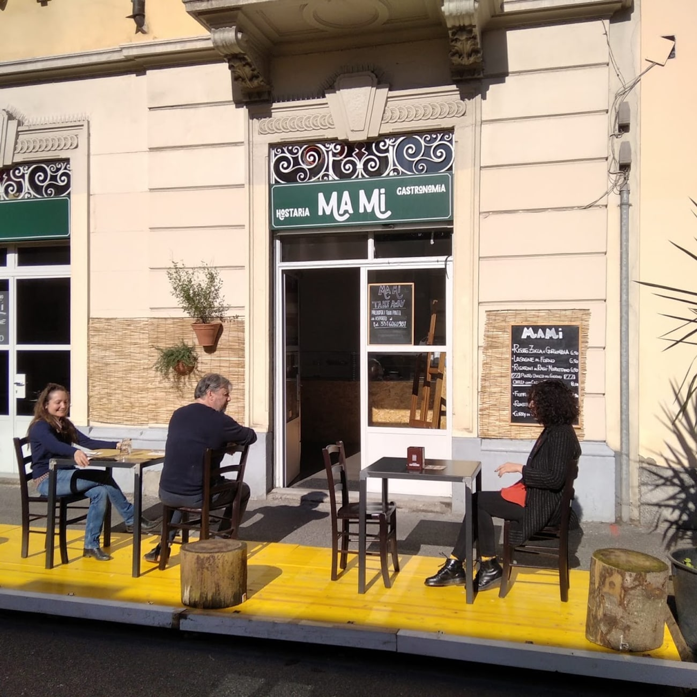
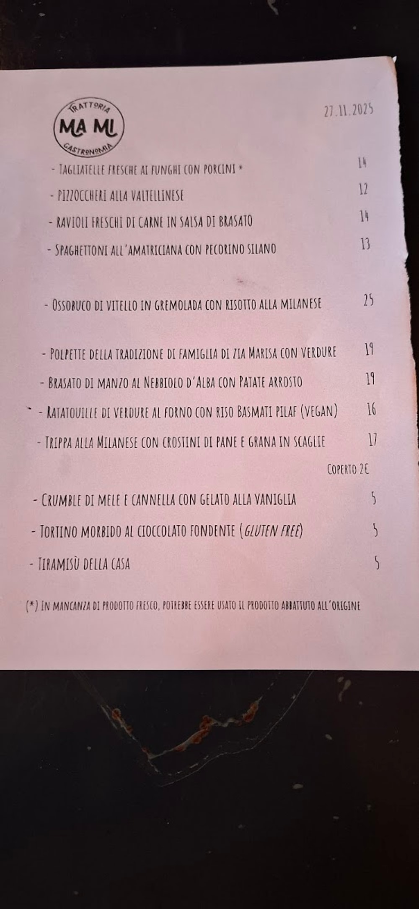
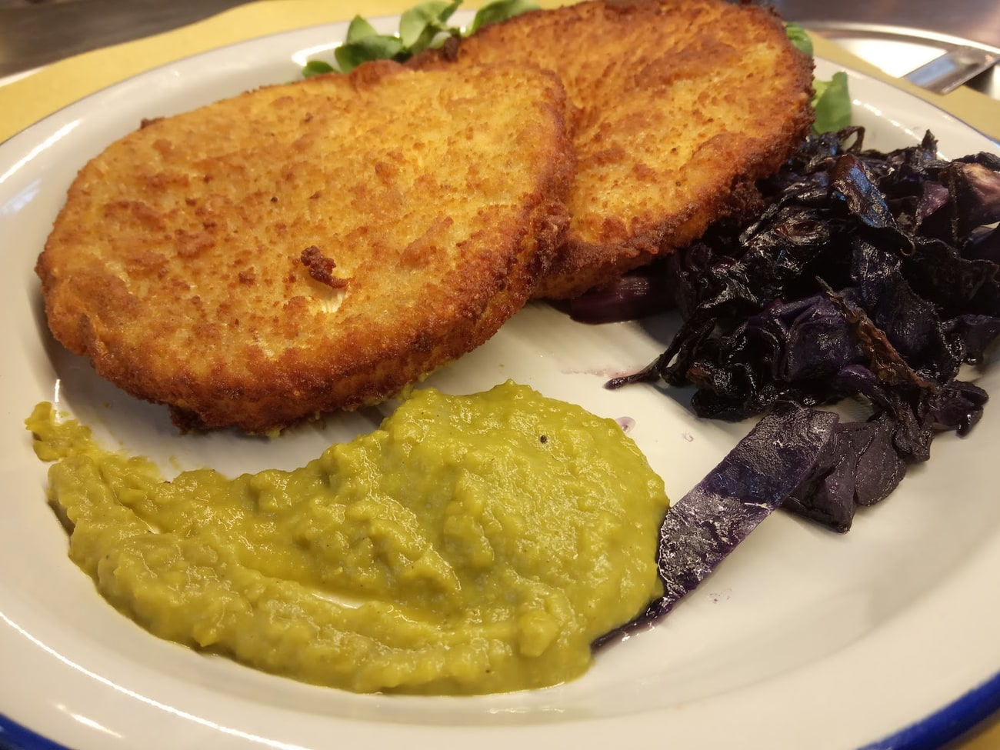
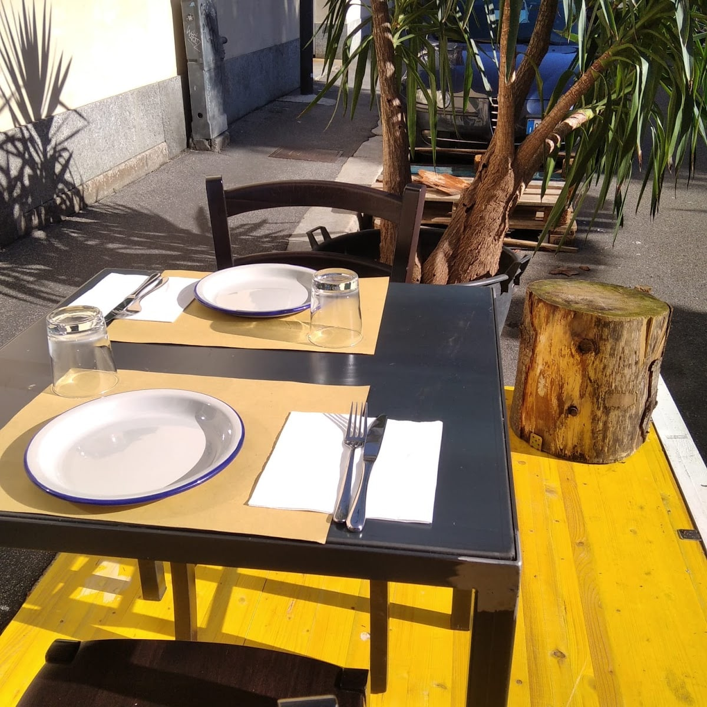

Trattoria e gastronomia · Bovisa, Milano
Quello
che c'è oggi.
Non c'è un menù fisso da mostrarvi, e va bene così: la cucina di casa cambia. A pranzo la lavagna del giorno, a cena la carta di stagione.

A pranzo
La lavagna
del giorno.
A mezzogiorno il menù è una lavagna appesa fuori: primi che girano, un piatto unico del giorno, e le cose di casa. È il pranzo di chi lavora e studia in Bovisa. Questi erano i piatti il giorno della foto.
Ma Mi · il giorno della foto
- Risotto zucca e gorgonzola6,50
- Lasagne al forno6,50
- Rigatoni al ragù napoletano6,50
- Piatto unico del giorno
- Chili con carne
- Falafel
- Roast beef
- Curry
La lavagna cambia ogni giorno. Questo è solo un esempio di che aria tira.
A cena
Una carta
che si rinnova.
La sera il registro cambia: la carta è di stagione e gira. Si va dai pizzoccheri e dall'ossobuco alla milanese all'amatriciana col pecorino silano, con una voce vegana e una senza glutine quasi sempre presenti.
E poi c'è il piatto che racconta chi sono: le polpette della tradizione di famiglia di zia Marisa. Le ricette di casa, messe in carta con il nome di chi le faceva.
Prezzi e piatti trascritti dalla loro carta del 27 novembre 2025: cambiano, confermateli in sala.


La cucina di casa
Dal Sud al Nord,
e un giro nel mondo.
Nella stessa settimana si passa dalla pasta con le sarde alla palermitana ai pizzoccheri valtellinesi, e poi al curry, al chili, agli straccetti di pollo col latte di cocco. È la cucina di chi cucina quello che gli piace, fatto bene.
Prenota un tavolo«Ambiente familiare e accogliente, la signora che ci ha servito ha una solarità contagiosa e il cuoco gentile e super simpatico. Il tutto accompagnato da ottimo cibo.»
Francesca Astuti, recensione Google

Recensioni Google
4,7 su 204.
«Ambiente familiare e accogliente, la signora che ci ha servito ha una solarità contagiosa e il cuoco gentile e super simpatico. Il tutto accompagnato da ottimo cibo!»
Francesca Astuti
«Non prendo quasi mai il dolce, ma gli straccetti di pollo con lenticchie rosse, verza al latte di cocco e curry erano così buoni che ho immaginato che il dolce dovesse essere super!»
Fabiola Pignatelli
«Pietanze molto buone, servizio celere a prezzi contenuti. Ottima cucina, bella atmosfera. Consigliato.»
Da una recensione Google
Dove siamo
Bovisa.
Via Giuseppe Candiani 12220158 Milano
- lunedì12–15
- martedì12–15
- mercoledì12–15 · 18:30–22:30
- giovedì12–15 · 18:30–22:30
- venerdì12–15 · 18:30–22:30
- sabato18:30–22:30
- domenicachiuso
Sul posto · asporto · consegna a domicilio
Chiama per prenotareLa mappa è di Google: aprendola, Google riceve il tuo indirizzo IP e può usare i suoi cookie.
Domande
Il menù è sempre lo stesso?
No, cambia. A pranzo c'è la lavagna del giorno, con i piatti che girano; a cena la carta è di stagione e si rinnova. Per questo non pubblichiamo un menù fisso: quello vero è quello di oggi.
Si può prendere da asporto?
Sì: c'è il ritiro all'esterno e la consegna a domicilio. A pranzo tanti prendono un primo nella vaschetta e se lo portano via.
Quando siete aperti?
A pranzo da lunedì a venerdì, 12–15. A cena mercoledì, giovedì, venerdì e sabato, 18:30–22:30. Domenica chiuso.
Ci sono piatti vegani o senza glutine?
Spesso sì: sulla carta girano voci vegane (come la ratatouille col riso basmati) e dolci senza glutine (come il tortino al cioccolato). Cambiano con il menù, chiedete quando venite.
Dove siete esattamente?
In Via Giuseppe Candiani 122, in Bovisa, a due passi dal campus del Politecnico.